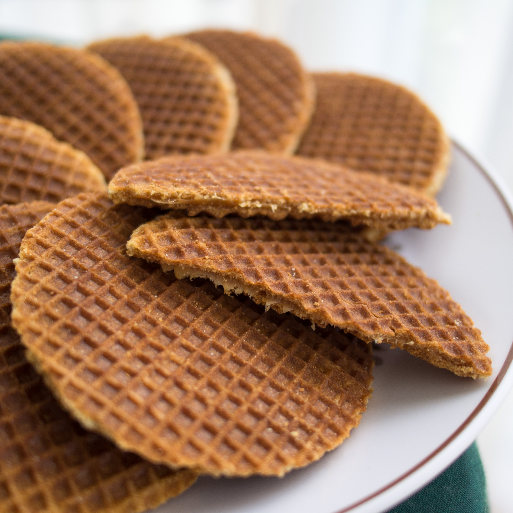

La più classica delle colazioni italiane consiste in una bevanda calda, come caffè, tè, oppure cappuccino, accompagnata da una brioche/cornetto oppure dei biscotti. C'è chi preferisce, soprattutto i più piccoli, una tazza di latte, con i cereali, oppure chi mangia un tramezzino al posto del cornetto. Questione di gusti!
OLANDA

Serviti solitamente con uno sciroppo scuro di nome stroop, i pancakes alla mela della colazione olandese sono una perfetta combinazione di dolce, aspro e salato. I pancakes olandesi sono solitamente più sottili rispetto a quelli americani e vengono serviti anche in occasioni speciali.
HAWAII
Nient'altro che deliziosa frutta fresca per la colazione hawaiana, d'altra parte l'isola ne offre in gran quantità in ogni periodo dell'anno. Possono arricchire la colazione anche un paio di bagel.

 ITALIA
ITALIA
 OLANDA
OLANDA